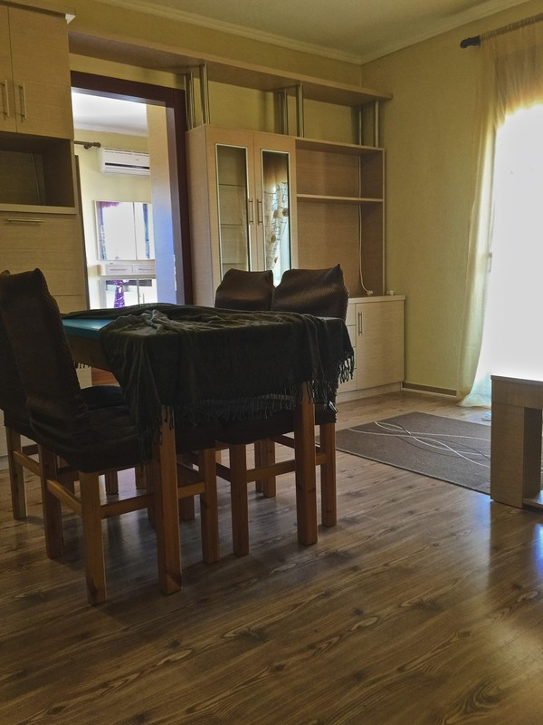

Οίκημα ανέγερσης 2010 με γκαρσονιέρες δύο χώρων (σαλοκουζίνα και υπνοδωμάτιο) 50 μέτρα από το κεντρικό πάρκο της Σίνδου το οποίο διαθέτει στάση λεωφορείου (αστική συγκοινωνία Θεσσαλονίκης ΟΑΣΘ), πιάτσα ταξί, εμπορικά μαγαζιά και νυχτερινά μαγαζιά. Επίσης ο σιδηροδρομικός σταθμός (ΟΣΕ) απέχει λιγότερο από 500 μέτρα. Το ΑΤΕΙ Αλεξάνδρειο απέχει δύο χιλιόμετρα από το οίκημα και υπάρχουν πολλοί δρόμοι πρόσβασης προς αυτό. Σε ένα φιλικό και φιλόξενο περιβάλλον με πόρτες ασφαλείας, ενεργειακά κουφώματα, κεραμοσκεπή, ξύλινα πατώματα, και σε ένα μέρος με ζωή όλο τον χρόνο και εύκολη επικοινωνία προς το κέντρο της Θεσσαλονίκης, σας περιμένουμε για να σας γνωρίσουμε και με φιλικές τιμές να σας βοηθήσουμε για μια εύκολη αποφοίτηση από το ΑΤΕΙ Θεσσαλονίκης.

Οι γκαρσονιέρες διαθέτουν :
- Αυτονομία θέρμανσης με καλοριφέρ
- Aircondition
- Internet VDSL 50Mbps με πρίζα ethernet
- Κεραία τηλεόρασης
- Δορυφορική τηλεόραση Hotbird
- 24ωρο ζεστό νερό χρήσης
- Κοινόχρηστο πλυντήριο με κλειδί
- Κάρτα ηλεκτροδότησης
- Κλειδαριές ασφαλείας
- Διπλό κρεβάτι με ανατομικό στρώμα
- Καναπέ τριών ατόμων με ανατομικό στρώμα
- Κουζίνα με όλες τις ηλεκτρικές συσκευές
- Τραπεζι τεσσάρων ατόμων
- Ευρύχωρη ντουλάπα
- Έπιπλο τηλεόρασης